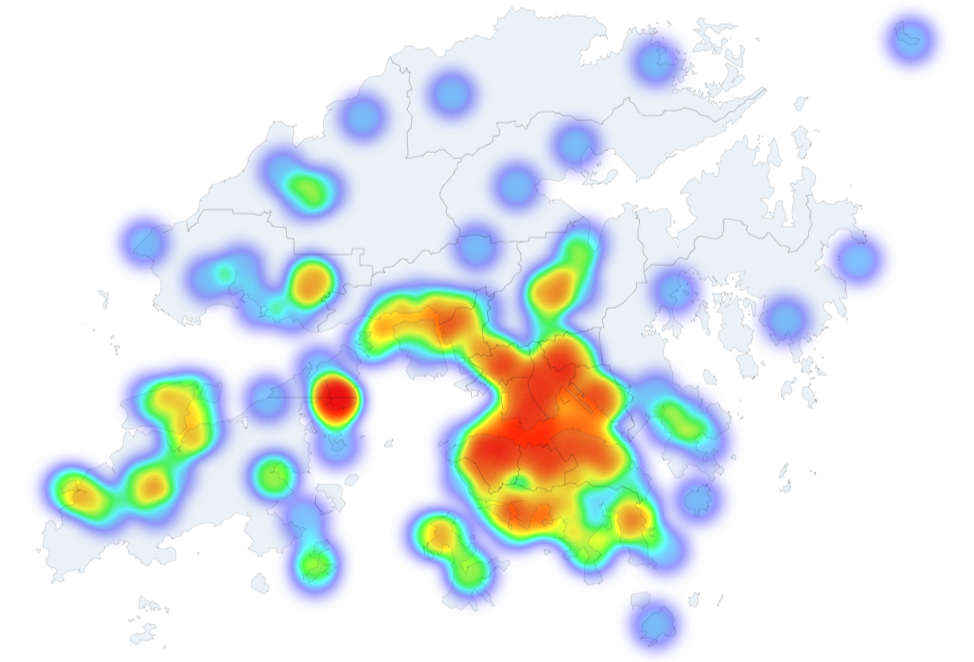

Multi Modal Mobility Intelligence Platform
Turn social media signals into practical views of where tourists go, which places they pair, and where new route or partnership ideas may exist.
Turn social media signals into practical views of where tourists go, which places they pair, and where new route or partnership ideas may exist.

Trip ideas for visitors planning Hong Kong.
See which places guests connect with your hotel.
Find places that can bring more diners.
See what people pair with your attraction.
Build better routes from place pairings.
See how shopping places fit into tourist routes.
See where people come from, where they go next, and which places connect.
See which places get stronger reactions and how that changes over time.
See which places are often paired and which combinations look stronger.
Compare two places and export a simple report.

See which markets show up around each place.
See where people come from, where they go next, and which places are linked.
See which place combinations look strong enough for routes, bundles, or partnerships.